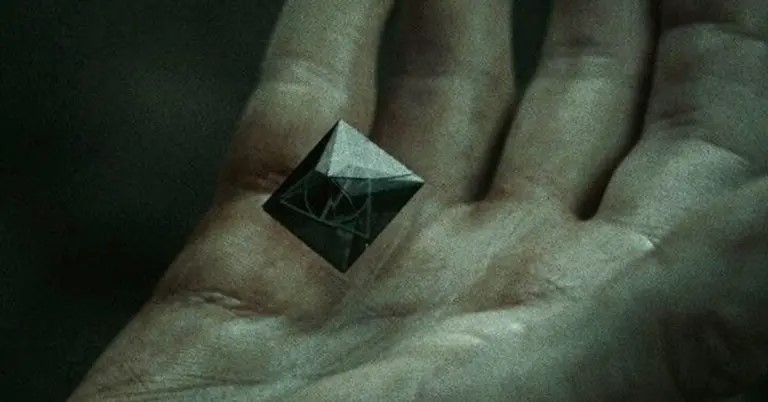

La Piedra de la Resurrección
La leyenda establece que Cadmus Peverell, el primer propietario de la Piedra, la utilizó en un intento desesperado de traer a su amada de vuelta de la muerte, tuvo éxito pero solo consiguió que regresase en forma de espíritu el cual no pertenecía realmente al mundo de los vivos. Consciente de que no podría devolverla por completo a la vida Cadmus enloqueció, matándose a sí mismo para estar con ella.
La familia Peverell conservó la Piedra de la Resurrección, pasando de generación en generación, hasta que finalmente acabó en manos de Sorvolo Gaunt, un descendiente de los Peverell, en forma de Anillo. Aparentemente ni Sorvolo ni ninguno de sus parientes conocía la verdadera naturaleza del anillo ni del símbolo grabado en él. Sorvolo afirmó que el signo era el escudo de armas de los Peverell.
